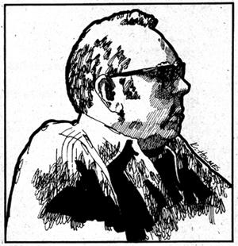

Harry Caudill, now 53, has spent most of his life speaking out for the land especially for the land of Appalachia. He has spoken as a citizen, as a crusader, as a historian, as a writer, as a lawyer, and as a Kentucky legislator (three terms). unfortunately - as anyone familiar with the continuing rape of the Appalachians knows-he has spoken mostly in vain.
Caudill suffers special agonies whenever he contemplates the desolation that strip miners leave in their wake and he has repeatedly cried out against this insane monument to greed in numerous magazine articles and three books: Night Comes to the Cumberlands, Dark Hills to Westward, and My Land Is Dying. The last, published in 1973, carries an introduction by Robert Coles which says of the book's author: "He writes, he fights in the courts, he speaks to people, he does all he can and more than most of us. A more enlightened nation would honor him as one of its finest citizens. But then, a more enlightened nation would not be so in need of his kind of extraordinary public service."
A lifelong resident of Kentucky's Letcher County, which his ancestors helped settle, Mr. Caudill has practiced law in Whitesburg since 1948. He, his wife Anne, and one of their three children currently reside in a modern home near the base of Pine Mountain where Greg Carannante and Jim Webb conducted the following interview in late February of this year.
PLOWBOY:
Mr. Caudill, what were the people who settled the Southern Highlands-especially West Virginia and eastern Kentucky really like? The classic story that we all like to repeat is that the white pioneers of this part of the country-our forefathers-were literate Scotch-Irish. Yet you maintain, in Night Comes to the Cumberlands, that the first settlers here were the "dregs" of Europe people originally imported into North America as indentured servants.
CAUDILL: I was talking to Jesse Stuart about that not long' ago and he said, "I'm astonished that anybody would argue that we mountaineers are mostly Scotch-Irish. We're not We're mostly English. Our ballads, our music, our traditions everything about us is English." ,and that's true. If you trace the oldest families in these parts back to their immigrant ancestors all of whom left Europe between 1600 and 1700-well, there you are indentured servants and a good number of them from England. Take my family, for example. We go back to William Caudill, who shipped out of Grave's End, England in 1635 when he was 20 years old.
The Scotch-Irish didn't start coming over until way up in the 1700's, when England got to legislating against their wool trade That doesn't mean, however that our English ancestors the ones who eventually peopled these mountains-were the stalwart pioneers that we like to imagine. Far from it!
It was the Scotch-Irish and the Germans and the Huguenot French, in the main, who pushed the frontier west. They passed right through these mountains and cleared them of Indians while our forefathers waited patiently back east. My ancestors, for instance, were down in Wilkes County, North Carolina when Boone and his contemporaries were building Harrodsburg and Boonesboro..
If you read your history, in fact, you'll find that there was a great lot of people in North Carolina who were not active in the Revolution. They weren't active on the frontier either. They waited behind the frontier and it was only after others had pushed beyond these mountains that they came in and settled. They didn't make their move until it was safe to do so. Boone was all the way out in Missouri-hundreds of miles west-when my ancestors came to east Kentucky.
So it was the Scotch-Irish and the Germans and the French who passed through here first. But they wouldn't stop. They didn't want anything to do with these mountains. That's not to say that no Scotch-Irish settled here at all, because some did, but they were never the dominant element. In the main, the Germans had staked their claim to the bluegrass in Kentucky's middle and tire 'Scotch-Irish had gone all tile way to Missouri by the time east Kentucky began to fill up.
Eastern Kentucky, which was claimed largely by our English forebears beginning in about 1792, was the last part of the state to be settled. The Scotch-Irish had already incorporated Lexington, a hundred miles to the west, 20 years before. Lexington had a university with a medical school and a law school and was a growing town with hundreds of slaves building fences and clearing land when people began to come here. So when we talk about all those brave, hardy pioneers who settled these mountains well, they weren't brave and hardy at all.
Now West Virginia was somewhat different. It did get a little more of that pioneer movement than eastern Kentucky got. And I think the Scotch-Irish had a more significant influence in West Virginia than they did here. That influence was still a minor one, though, compared to the English.
PLOWBOY: Why did the Scotch-Irish pass right through this part of the country?
CAUDILL: They were too strong, too dominant, and too compelling a people to settle down to the standards that people adjusted to in these mountains. The Scotch-Irish were an ambitious people. They wanted to go where the good land was. People who were ambitious didn't stop here when there was land in Illinois that you couldn't plow to the bottom of. And the Old South, too, was waiting to be settled.
The Scotch-Irish, then, took one look at this poor land they had no real idea back then of the tremendous wealth under the earth-and moved right on to better sections of the country. And wherever they went, they generally were successful. They have a tremendously strong gene pool, you see, and if you look at the great American fortunes you'll see that every one-with the exception of du Pont-belongs to a Scotch-Irish name. Ford, Mellon, Rockefeller. They're all Scotch-Irish.
PLOWBOY: And while they were moving on to greater things, our largely English ancestors were settling for second or third best here in the Appalachians.
CAUDILL: That's right.
PLOWBOY: OK. Why did those ancestors come here anyway? Our English forebears must have already been farming better land back in North Carolina and Pennsylvania and the other states they left behind. Why did they trade that for this? Did they-as all the history books tell us-move here when "civilization" began to crowd them too much back east?
CAUDILL: Yes, in a sense. Some of those settlers simply wanted to stay on the frontier and, of course, the frontier seemed to last longer here than practically anywhere else. After all, we were still paying wolf bounties in Clay County, Kentucky up into the 1840's. The fact is, when I was a boy there were great sections of this country still in virgin timber. It was easy to believe that you were in a frontier setting as recently as 30 or 35 years ago down here in places like Lion Fork Creek. There were no roads-nothing but great trees-and it was practically impossible to get back into sections like that. And that's just what a certain kind of person was looking for
PLOWBOY: People who
CAUDILL: People who, in large measure, made whiskey. Now that's not as bad as it sounds because, at one tine, making whiskey on little farms in small individual batches was a perfectly legitimate and legal "cottage industry". People would raise a little patch of corn and make it into whiskey and then sell it to the big firms which, in turn, would bottle it and market the liquor. And that's how thousands of early farmers in, say, Pennsylvania earned a cash income every year.
But then our new government began to cut in on the business by imposing a tax on the trade. The result was the Whiskey Rebellion, which Washington suppressed during his first term as President and the result of that was that something like 6,000 families got up and moved out of Pennsylvania into Kentucky to get away from the revenue collectors. I've read that this was the biggest single immigration into Kentucky, percentage-wise, in all its history. Those 6,000 families spread all over the state and greatly enriched and deepened the whiskey-making tradition and some of those people founded the great bourbon industry in central Kentucky.
Others, of course, settled right here in these mountains, grew little patches of corn just like the ones they had grown back in Pennsylvania, and set up and ran their home distilleries the same way they had done back in Pennsylvania. To tell the truth, those mountaineers-even the ones who didn't drink were almost universally distillers. That's the way they got their money and they thought that, by moving over here, they could get away from the government's whiskey tax.
PLOWBOY: But they didn't
CAUDILL: No, and it was even worse than that. Eventually the government didn't just tax these little farm distilleries it outlawed them completely. And that, I think, did much to push the mountaineer into poverty-contain him in poverty-because it was just like telling a bunch of farmers, "You can't farm" or doctors, "You can't doctor". When you turn someone's life upside down like that, it takes a long time for him to adjust to the changes and learn new ways to live.
PLOWBOY: Still, whenever you mention the Cumberland Plateau or the southern Appalachian Mountains-especially the parts taken in by West Virginia or eastern Kentucky-many people conjure up images of quaint mountaineers hardy, independent souls who live back in "hollers" and spend a lot of time fighting off revenue agents. Is this true? Does the stereotyped "southern mountaineer" still exist as a human species?
CAUDILL: I believe that, as a social type, he's already vanished except in a very few isolated areas. He's been replaced by the modern east Kentuckian/West Virginian, which is an entirely different character. There's a great deal of difference between today's east Kentuckian and the Kentucky mountaineer of an earlier time.
The modern east Kentuckian-in many cases-is relief fed, food stamp-fed, kept alive by Medicare and Medicaid and so on all of which were unknown factors in the life of the old Kentucky mountaineer. The mountaineer lived by fishing and hunting and farming and moon shining. He had his music and his fiddle tunes and his folk methods and his folk medicines, practically all of which have been lost.
PLOWBOY: Then you don't feel that the mountain culture exists any longer?
CAUDILL: I think that it exists as a dying influence, as a diminishing influence in the lives of the people who live here. Increasingly, however, these people look to television for entertainment and to doctors for the alleviation of ills and so on rather than to their own resources and their own culture. In my estimation, we who now live in this part of the Cumberlands and the Appalachians are in the process of becoming the most dependent people in the United States maybe in the world-which is the reverse of the situation, say, 50 or 60 years ago.
PLOWBOY: Yes, but the characteristics of the old culture still do exist in varying degrees. The music is still played, for instance, and the mountain people still do farm and hunt and fish .
CAUDILL: Well, compared to the old days, they do very little of all those things. Take the music., for instance. It now exists as simply a remnant of what it once was.
Today people get together once in a while and revive the old tunes and the old songs. But 50 years ago! Why there was a dance every Saturday .night in practically every community and people gathered with their musical instruments and vied with one another for the playing.
If you want a person who knows Appalachian music-the old traditional songs and ballads and fiddle tunes-you have to hunt to find him now. And when you do track down such a musician, he's a living museum piece whereas 50 years ago, he'd have been a living performer.
There was a time which I can remember very well when, on days warm and bright like this, the county seat would be filled with banjo pickers, fiddlers, and other musicians. They performed on the streets and wonderful songs sprang into existence spontaneously. When Floyd Collins died over in west Kentucky, for instance, people were playing and singing "The Ballad of Floyd Collins" within just a few days. When the Titanic went down, there was a great outpouring of homemade ballads across the Kentucky mountains.
But we don't do that anymore. Or, at least, we do very little of it. And when you're fortunate enough to find someone who can do it-who does do it-he's a very interesting personality and a subject of comment. What we have now is a fragmentary, dying manifestation of a much richer culture.
PLOWBOY: Do you think that this trend toward extinction of the old mountain way of life is irreversible?
CAUDILL: The old ways are almost gone now, but I think they'll be saved as great stories are saved in books and in museums and on records.
Take folk music again, if you will. There's very few people who can play and sing and dance the old songs and the old jigs that were commonplace parts.of living here in the mountains just a few decades ago just before the Second World War. The very fact that there are individuals trying to save that music now-on records, with tape recorders, by setting up classes for the young-is an indication of just how near extinction the old music is.
It was World War II, that great diverter of attention, that really did it. The old way of life was very much alive until the war which caused a great out-migration from these hills. People moved away to the high-paying jobs in the big cities. And then radio-and, later, television-became commonplace here in the mountains and the families who were left shifted their attention from the old music to bluegrass and all the things that came after.
PLOWBOY: And how do you feel as you watch the old way of life die?
CAUDILL: I find it very sad that a folk culture as old, as rich, as varied, and-I think-as strong as the Appalachian folk culture is in the process of dying out.
But we must remember that we have a common language here in the United States and we have a road system that goes from one edge of the continent to the other, and we have television and radio that are ubiquitous, omnipresent and we're becoming a homogenized people.
In 20 or 30 years Americans will be the same, I suppose, everywhere. And who knows? We may be the most bland people in the world because of it. All will be talking alike and doing their desperate best to look alike.
PLOWBOY: Is that a good direction for us to take?
CAUDILL: Well I've always urged people to retain their individuality, and that's a very unpopular course to follow right now. The most unpopular man in the country is the individualist, because he's universally distrusted by the great rank and file of the people. Again, I think, that reflects the changing times and mores.
For example: Mountaineers and Kentuckians-in fact, people all over the country-used to elect very colorful people to public office. Men got elected on color. In my boyhood, for instance, the U.S. Senate contained many people who were there because they had strong, exceptional, unusual personalities. There was Glenn Taylor of Idaho "Happy" Chandler of Kentucky "Pass The Biscuits, Pappy" O'Daniel from Texas.
Now these personalities got elected to office because they were vivid, colorful people. They were roguish, but nearly all successful, politicians in all times have been rogues. Down through history, the men and women who've been leaders have been followed because they attracted attention and people liked that.
Then the attitudes of the people changed-probably due mostly to the mass military training of the great wars-and people began to avoid volunteering avoid sticking their necks out. "Keep a low profile" that was part of the military indoctrination. And that happened to so many people in so many wars that the general populace changed its attitude and decided that it wanted leaders who were low-profile, low-key people with little flash, little color, little spark and that's the reason we've wound up with a United States Congress filled with people who can't articulate.
Today's politicians have to survive without saying anything. They're the world's best equivocators. Most citizens are now terribly frustrated by our lack of national leadership but, at the same time, they won't elect strong personalities to public office. They're repulsed by such personalities. It's part of a nationwide trend. We've thrown out our colorful characters or had them die off, and we've been afraid to replace them with others.
PLOWBOY: Can you give me an example of a colorful individual whom we've failed to elect recently?
CAUDILL: No. Because, in the first place, very few colorful personalities now enter politics. They no longer believe they can win and today's real individualists shun political ventures.
Political candidates-successful ones-are packaged. Their images are sold. To win, you've got to have an image that, as the processors say, "meets the mass requirements" which is low-profile, rather drab, colorless, gray, indistinct.
How far could a Teddy Roosevelt get if he ran for President today? The people would say, "Why, that damn cowboy he'd keep things in an uproar. We need someone who's harder to pin down."
And that plays right into, the politicians' hands, of course, because it enables them to endlessly shift their responsibility and get away with it. It used to be that-when you got upset about something that a politician had done-you could go right down to the county courthouse and find someone you could blame. Try confronting one of your elected officials now and he'll say, "Well, I can't do anything about that. Thai's handled at the district level in the next county down the river." And if you go down there, you'll find someone who's not elected and who can assume the blame without political retaliation. So we're left with no way to get any satisfaction out of the situation.
PLOWBOY: Mr. Caudill, in your book, Night Comes to the Cumberlands, you said, "The mountaineer must cultivate the earth to survive." Is that still true?
CAUDILL: It depends on how you define the word "survive" on whether you want to revive the old independent ways of life or go along with the new.
About a third of the people who now live in our part of the Cumberlands and the Appalachians don't till the earth or do anything, you know. They just draw checks. The federal government has turned this section of the country into a tremendous welfare reservation, patterned in some considerable degree after the Indian reservations.
When the Indian tribes were broken up, destroyed, we put what was left of those people-as you'll remember-on reservations. We gave them issues of beef and blankets and waited for something to happen. Nothing happened. So, later, we added food stamps, Medicare, Medicaid, and checks. And the Indians are still there waiting.
We've done the same thing with the Southern Black. He got up and left the South and piled into the center of our great cities and we turned. those cities into welfare reservations. New York now has a million and a quarter people on relief mostly jammed into a few areas, piled thick and deep, just waiting for something to happen. Nothing's going to happen.
And, of course, we've done the same .thing with the Appalachian Mountains. The land wore out and the people went to the mines and then mining was mechanized and about two-thirds of the people became superfluous. One of those thirds left and the other is still here on relief. They, and their descendants, are waiting for something to happen. And nothing ever happens.
We're building gigantic welfare reservations all over this nation, because we flatly refuse to develop any alternative. When it comes to social pioneering, we're the most conservative country in the western world. We don't try anything except checks handouts in one form or another.
, We could have followed Switzerland's example, if we had wanted to, and had people gainfully employed at useful, desirable, pleasant, and enjoyable jobs from one end of this country to the other. But, as a matter of public policy, we didn't do that.
Just like we didn't try to make anything of our Blacks after they were freed at the end of the Civil War. We could have followed Thaddeus Stevens' advice and built schools for the Blacks arid opened the western lands to them and turned them into a contributing, independent, valuable part of our society.
Instead, we did nothing for the Blacks except turn them loose and let them become wage slaves of the people who had fought for four years to keep them in bondage. So they stayed in the South for 70 years after the Civil War, eking out a bare living, exhausting the land with archaic farming methods.
Finally-when the South was just about farmed to death all those Black people piled into the North in quest of a war job or a manufacturing job after the war. Then when automation and mechanization came along and that raw labor was no longer needed, we just stacked them up and gave them relief checks and created Black welfare reservations. We did that as a matter of public policy just as we've created these welfare reservations here in the Appalachians.
PLOWBOY: What should we have done instead? You just referred to Switzerland, for instance. What has that country done that we haven't?
CAUDILL: Switzerland is one of the poorest lands on the globe. It's the same size as east Kentucky and three-fifths the size of West Virginia. It has no minerals of any value except its brine beds which are only one-tenth as large as the brine beds in West Virginia. It has no coal, no iron, no copper deposits, the -most meager forests imaginable. Twenty-one percent of the country, in fact, will grow nothing at all.
And yet twice as many people live in Switzerland as live in West Virginia. Where we have a third of our population on welfare, the official government figures released by Switzerland at the end of last year listed only 54 unemployed individuals in the whole country out of a labor force that included 800,000 imported foreign workers. The Manchester Guardian printed an article recently which stated that, per capita, Switzerland is the richest country in the world.
West Virginia, as I'm sure you know, used to have signs posted on main highways coming into the state. Those signs said, "Welcome to West Virginia, The Switzerland of North America." But there are no comparisons between Switzerland and West Virginia, except for the fact that they're both mountainous. The Swiss have adopted policies that have made them rich in their mountains, while we've adopted policies that have made us poor in ours.
To put it another way, the people of West Virginia and the people of east Kentucky have gotten poor in an exceedingly rich land while the people of Switzerland have gotten rich in a very poor land. And it all stems from the policies that each population has adopted. The Swiss chose a route that has led upward to work, creativity, productivity, wealth, and independence. We've followed a path that has taken us down into poverty; dependence, and the everlasting reliance on welfare checks.
PLOWBOY: All right. Let's say that we had done it all differently. Instead of letting the coal barons plunder these mountains at will and get off scot-free the way we've done, let's say we started taxing the big coal companies fairly back in their early days. And that we used the money collected to provide education for the people who lived here in the hills from which all that black wealth was taken. Would that education for its inhabitants early on have drastically changed Appalachia's recent past and present?
CAUDILL: If we had had the will and the mind and the intelligence at the local level to levy a fair and adequate tax on coal and the other minerals taken from these mountains and then if we had put that money into good schools, we could have changed the whole situation.
It wouldn't have taken a very large tax, either. If we had collected just 10 cents a ton on coal moving out of here in the early years-and keep in mind that 10 cents then had the purchasing power of about 60 or 70 cents now-we would have had-in a county like Letcher, for example-$60 million to spend by 1955. Well, $60 million invested in schoolhouses and in roads to get children to school and in decently paid teachers would have created an entirely different situation.
As recently as 1948, I was defeated for the state legislature because people thought I was a radical for saying that a teacher should be paid a minimum of $100 a month. I even had teachers tell me that I knew no such salary as that could ever be paid.
I never had a teacher while I was in school who made over $100 a month till I got into college. We didn't have any money to pay them with. Despite the millions upon millions of dollars' worth of coal that was being taken out, the county was broke. It couldn't even pay its bonds.
But we could have built schools, we could have built roads, and we could have had a good health department all financed locally with coal revenues. We could have had doctors and nurses and we could have had people going into the schools and educating the children in dental and health care.
One doctor who understands preventative medicine is worth 30 or 40 who pump pills into people if you can get at the children while they're young and interested and want to learn about good health. In failing to do that, however, we just deteriorated. We accumulated a backlog of ills that are almost incurable.
PLOWBOY: Well, what's past is past.But what about now? Is it too late to start doing what we should have done back then?
CAUDILL: It's never too late to make a start it's just that we're still too ignorant to do it.
Here. Look at West Virginia. It's sitting right in the middle of the greatest demand for coal in history. They're stripping it like crazy over there and nearly every lump they dig is leaving the state. A lot of that coal is going to Germany.
Now if the people the West Virginians are sending to their state legislature had a tenth the wisdom of the Arabs, they'd be taxing that coal at every turn. They'd tax the privilege of having it in the ground and they'd tax the privilege of mining it and the privilege of loading it. They'd get a couple of dollars on every ton and they'd plow it right back into West Virginia.
The Arabs have been smart enough to do that with their oil, but not the West Virginians with their coal. They love to send it out cheap and stay ignorant and poor.
You know, every few years outsiders rediscover West Virginia and eastern Kentucky and try to do something to help the people who live here. I find that very interesting. West Virginia, for example, has its own congressmen and its own senators who do nothing, say nothing, advocate nothing, see nothing wrong. It always takes someone like a man named Ken Hechler from New York or a man named John Kennedy from Massachusetts to notice that West Virginia is dying on the vine. The senators and congressmen from West Virginia never seem to notice.
PLOWBOY: What about Kentucky?
CAUDILL We got a severance tax passed in Kentucky even though we didn't get a single mountaineer to vote for it. Not a man in the Kentucky Legislature from the coal fields of east Kentucky voted for the severance tax. We passed it with votes from Louisville and other parts of the state. Our local man opposed it strongly.
PLOWBOY: Why?
CAUDILL: He was in the coal business and didn't want'to pay the tax. Practically everybody in the legislature from eastern Kentucky is in the coal business, just as most of your West Virginians are in the coal business.
There's practically no antidote to ignorance and sloth, you know. We've got everything in the world here in these mountains that's required to build anything we want to build except the willpower and the mind.
The only thing that holds us back is ignorance on the one hand and laziness on the other.
Look at our land. Let's take east Kentucky. We live here in the middle, so far as variety is concerned, of the richest forest on the globe. The only places that can compare with it are a few spots in the tropics. Europe has one type of oak and we have 22. According to the Encyclopaedia Britahnica, West Virginia has more seed bearing plants than any other place on earth-just an incredible variety-and the oldest forest on the globe. It goes back 60-some million years.
Much of the vegetation in the northern hemisphere is believed to have started right here in east Kentucky and spread, at one time, all the way to China before the ice sheets came down and cut off the Chinese forest over there and our forest here. Plant scientists say that's the reason the tulip poplar grows here and in eastern China and nowhere else!
The tulip poplar is one of the oldest plants on the globe, so old that there's nothing else it can cross with. All its cousins have perished., And it was right here when the coal beds were laid down. Its leaves-the imprint of the tulip poplar-are sometimes found in the coal.
All right. When the ice sheets moved down from the Arctic, they pushed everything ahead of them-all those northern plants including the rock lichen. All that flora crept down along the shoulders of the Appalachians, across the hills, and into this mountain range. And later, when the ice melted and the earth warmed, the southern plants moved up to this same spot. And that's why this is the only place on earth where you'll find a southern pawpaw, tree from Central America shading a rock lichen from Alaska.
The older people knew that, but the young ones don't. They don't know a white oak from a black gum. We don't Study our plants or our woodlands today. We're profoundly ignorant about them. But the woods are here! Rich in chemicals, rich in lumber, rich in medicines, rich in beauty, unbelievably rich in variety and antiquity. Then under that, look what you have!
There are three great seams of coal of metallurgical quality in the 'United States, and two of them are right here in eastern Kentucky. The Interior Department says the most valuable mineral deposit on the globe is an Appalachian coal seam that extends from western Pennsylvania, across West Virginia, arid terminates here in Kentucky's Letcher County. It's known as the Elkhorn No. 3 vein. The coal here in Big Black Mountain is rated as the best metallurgical coal on earth. And down 170 feet under our feet is another vein of coal that is very, very rich.
In addition to that, I've seen the geological reports prepared by The Geophysical Resources Corporation of Oklahoma City and Tulsa: That firm came in here three years ago on a contract with a consortium of four oil companies and they set off explosions in the earth and read the vibrations that came up and calculated that, at 12,000 to 14,000 feet below the surface, there's a pool of oil extending under a million acres of east Kentucky. And natural gas. A lot of natural gas.
There's also an enormous brine bed down there a layer of salt up to 600 feet thick. There's iron ore here too. Our old pioneer ancestors built little furnaces along Pine Mountain and made their own plows and other implements with that iron. That's the reason the Virginia Iron, Coal and Coke Company was so named when Kentucky was still part of the Commonwealth of Virginia. And that's the reason all those old broad form deeds call for "all coal, all oil and gas, all salt and salt waters, all iron and iron ore and all other mineral and metallic substances and all combinations of the same".
PLOWBOY: It sounds as if a community could be almost completely self-sufficient here.
CAUDILL: When the town of Jenkins was built, the founders baked their building bricks out of local clay, sawed their lumber out of local trees, produced their scrap iron from local iron deposits; and made their cement out of limestone taken from Pine Mountain. There's a million tons of cement-quality rock up there.
We have everything we need here, including enough agricultural land to feed many, many people. When the Swiss ambassador was here a few years ago, he said that Switzerland could feed itself if necessary. Now remember that the area of Switzerland and the area of east Kentucky are roughly the same and there's six million Swiss and less than one million eastern Kentuckians.
You take the Big Sandy Valley. It's unbelievably rich for potatoes, berries, and so on. And water? At a time when water is very precious in many parts of the world, we have 55 inches of rain a year. Now that the forest is returning into these old, open fields, our rainfall has increased from about 45 inches to 55 inches annually.
Except for strip mining, which has torn up and ruined the beauty of the countryside, we have some of the most lovely landscape on the globe: There is no place anywhere any prettier than the Red River Gorge.
So what do we need? Will and brains. Give us those two things and we'd be rich. Without them, all the rest is superfluous.
PLOWBOY: Is there any way we can attain, or obtain, them now?
CAUDILL: I don't know. I doubt it. We have two types of young mountaineers. One wants to leave and the other wants to stay here and rip and tear and ruin anything to get rich. Essentially, those are the two dominant groups.
PLOWBOY: What do you see in Appalachia's future?
CAUDILL: I think it'll be mined into a desert. We'll dig till every lump of coal is taken out of these hills.
The only hope we've got that anything with any semblance of utility will be left in these mountains is the hope that we'll be able to liquefy coal in place, eventually, and pump it out of the ground instead of having to tear it out. Liquefication might save us.
Otherwise it's just a matter of time. Every hill will be decapitated and all the woods will be dug up. The streams will be congested with mud and the whole country will be ransacked.
PLOWBOY: Does it have to be that way?,
CAUDILL: Well remember that the Coal Age is only about 300 years old. Up until the beginning of the 1600's, it was a crime punishable by death-to burn coal in England because of the air pollution.
There were half a billion people in the world at that time. Now there's nearly eight billion and every man in the world wants to improve his standard of living by consuming more energy. If you'll just look forward, you'll see that the coal will all be dug. And the limestone-limestone is life-and all the other minerals. They're going to pump this oil. They're going to pump these brines.
PLOWBOY: What about today's worse problem strip mining. Can we stop it?
CAUDILL: No. Not in any practical way. Not unless we learn to liquefy the coal. Most of that coal out west, you know, doesn't have any stone on top of it. You can't deep mine veins like that. They'll fall in and kill the miners: There just isn't any way to deep mine an 80-to-100foot-thick seam of coal that's covered by only 18 or 20 feet of loose overburden. The big companies are naturally going to strip a vein like that and I can understand why. The crime of the matter is that they aren't going to make even the first effort to reclaim the land they turn upside down.
That's the part that's hard for me to take. The fact that we aren't going to make those strippers reclaim what they're tearing apart. The Appalachian Mountain coal fields will be racked and ruined for good in four or five more years. Even if you passed a tough strip mining law now, you'd never know the difference.
PLOWBOY: I had kind of hoped we'd do more than make strippers reclaim the land they tore up. I'd hoped we might stop stripping entirely.
CAUDILL: Not a chance. The pressures to keep it going are too powerful. You're facing a tough combination when you line up against the rails, and the barge lines, and the mining companies, and the great land-owning companies, and the steel companies, and the utilities, and the rural electric co-ops, and the great foreign corporations that are loaded with billions of dollars and who want the coal.
That combination could buy every voter in the country if necessary, and most people couldn't care less. People, for the most part, don't care anything about the land. We're a people without any land ethic whatever.
How many Americans care about the land? If we really cared we would insist, for instance, that every acre of Iowa which is our breadbasket-go under a cover crop each fall. When Iowa fails, this country is going to starve. Yet, when I was out in Iowa two weeks ago, I talked to a county agent. And he said that nearly all the farmers out there have quit cover-cropping.
Back in FDR's time and Henry Wallace's time, the government paid farmers to cover-crop,and talked them into it and urged them to do it and cover-cropping became the order of the day. Now the soil just lies bare all winter and washes away.
The U.S. Department of Agriculture says that Iowa is losing one percent of its fertility every year and the American people don't care. Who on any campus asks, "Who's taking care of the soil of Iowa?" Nobody. Yet without the land, everything fails. When Iowa has lost its fertility, who will feed us? Who will feed India and China? Who will feed the world?
What pressure is there in this country for land preservation? In Germany, for example, dumping mine waste out on the land is a felony. All the waste goes back in the worked-out mine in Germany and that's been the law since 1865. West Virginia, on the other hand, has 15,000 acres covered with coal waste. East Kentucky has another 7,000. .
PLOWBOY: Mr. Caudill, one last question: It's been 12 years since you wrote Night Comes to the Cumberlands and many things have changed during that period. How would you rewrite the book today?
CAUDILL: About all I would change is the last part. I would put a great deal more emphasis on the need to restore-insofar as restoration is humanly-possible-the landscape we're tearing up. Because I've come to realize that no matter what ups and downs the market may take, we're not going to stop digging until all the coal is taken out of the earth.
We're going to plunder every last lump of coal and, once it's all gone, the human race is still going to be here. Continually increasing in numbers-unfortunately-always needing to eat, always needing clothing, always looking to the earth for everything it consumes.
So I would now advocate much more strenuous efforts to fix the earth back insofar as it can be fixed, because I have a deep sympathy anti pity for the people not yet born who are going to have to live on the land that we're tearing up. I would devote more lines, I think, to trying to persuade the American people to have a little more affection for their unborn posterity.
We take very lightly what we do to the land, but those who come after us will take our actions quite seriously. Because they'll have to live on the land we leave to them. They'll have to get their food from it. They'll have to fix it back or starve. And, by that time, much of the earth they'll wish they could depend on will be gone forever. Gone down the Mississippi.
|
 |
|
|